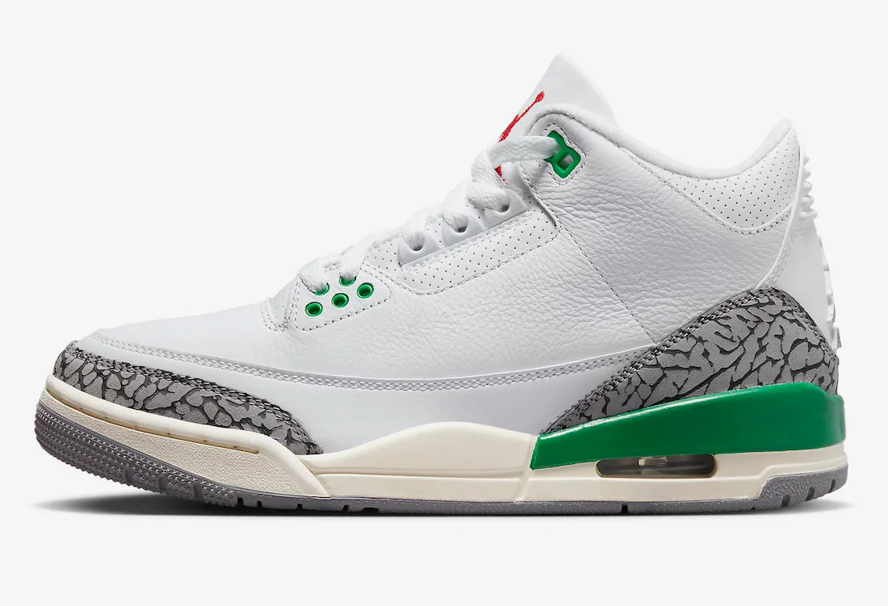

History About the Jordan 3:
The Jordan 3 is a basketball shoe designed by Tinker Hatfield and manufactured by Nike for the legendary basketball player Michael Jordan. It was first released in 1988, following the success of the Jordan 1 and Jordan 2. It was a groundbreaking shoe for its time, as it introduced several new features and design elements that had not been seen in previous Jordan models. For example, it was the first Jordan shoe to feature the iconic "Jumpman" logo, which has since become synonymous with the Jordan brand. It was also the first Jordan shoe to feature visible Air cushioning, which provided superior comfort and support for basketball players.
Influential Collaborations:
Air Jordan 3 'Off White': The Jordan 3 x Off-White collaboration was one of the most highly anticipated collaborations in recent years. Designed by Virgil Abloh, the Off-White x Jordan 3 features a translucent upper, signature Off-White branding, and a bright orange hang tag. This collaboration was highly sought after, with fans camping out for days to get their hands on a pair.
Air Jordan 3 'Fragment': Another notable collaboration is the Jordan 3 x Fragment, which was designed by Hiroshi Fujiwara, the founder of Fragment Design. The Jordan 3 x Fragment features a black and white colorway, with Fragment's signature lightning bolt logo on the heel. This collaboration was another highly sought-after release, with many fans considering it one of the best Jordan 3 collaborations to date.
Air Jordan 3 'UNC': The Jordan 3 UNC is a special edition colorway of the iconic Jordan 3 silhouette that pays homage to Michael Jordan's alma mater, the University of North Carolina. The sneakers feature a white leather upper with hits of Carolina blue on the eyelets, Jumpman logo, and outsole. This colorway was released in 2020 and quickly became a fan favorite due to its clean and classic design. The Jordan 3 UNC is a must-have for any sneakerhead and a great addition to any collection.
Air Jordan 3 'A Ma Maniere': The Jordan 3 x A Ma Maniére collaboration was released in 2021, featuring a unique twist on the classic Jordan 3 silhouette. The sneakers feature a white leather upper with gray suede accents, giving them a clean and sophisticated look. The A Ma Maniére branding can be seen on the tongue and heel, adding a touch of luxury to the design.
Personal Favorites:
The Jordan 3 silhouette has had numerous collaborations and special editions over the years, but my personal favorites are the Jordan 3 UNC, Jordan 3 Off White, and Jordan 3 Fragment. The UNC colorway is simple and elegant, with a clean white upper and subtle touches of Carolina blue that pay homage to Michael Jordan's alma mater. The Off-White collaboration brings a fresh and modern twist to the classic Jordan 3, with Virgil Abloh's signature deconstructed design and bold orange accents. Finally, the Fragment collaboration is a perfect blend of streetwear and luxury, with a black and white colorway and Hiroshi Fujiwara's lightning bolt logo on the heel. Each of these sneakers has a unique design and special story behind them, making them a must-have for any sneakerhead.
Upcoming Jordan 3 Releases:

Air Jordan 3 WMNS “Lucky Green”
Color: White/Varsity Red-Lucky Green-Cement Grey-Anthracite-Sail
Style Code: CK9246-136
Release Date: May 18, 2023
Price: $200
Air Jordan 3 “Palomino”
Color: Light Orewood Brown/Metallic Gold-Light British Tan-Palomino
Style Code: CT8532-102
Release Date: August 19, 2023
Price: $200
Air Jordan 3 “Fear”
Color: Night Stadium/Total Orange-Black
Style Code: CT8532-080
Release Date: November 25, 2023
Price: $200
Why the Jordan 1 may be one of the best Jordans:
Watch the video below to find out how the Jordan 3 saved the entire Jordan brand!